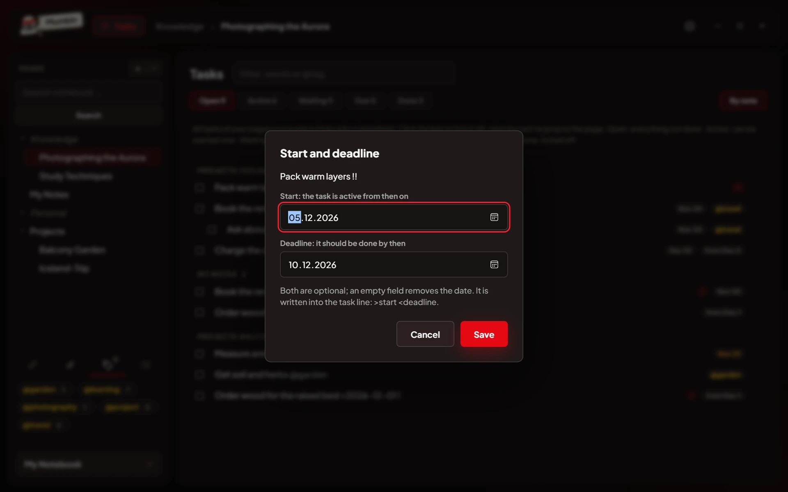
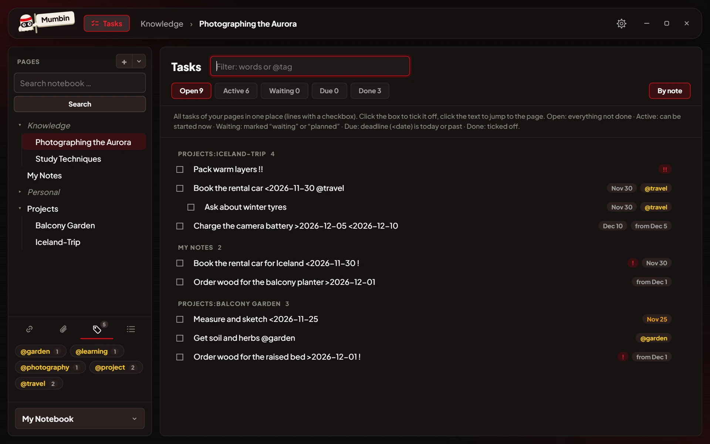

All posts / Guide / 4 min read
Tasks with a start and a deadline in your notes
Tasks stay in the note where they began. Here is how to set a start and a deadline and keep an overview.
Write a task
A task is a line with a checkbox. Click the checkbox symbol (☐) in the format bar or write [ ] text. Lines that begin with TODO: count as tasks too.
- Mark importance with
!or!!. - Add a keyword with
@name. - Indented lines are subtasks.
Set a start and a deadline
Both are optional. Mumbin reads >2026-12-01 as the start and <2026-12-31 as the deadline at the end of the line. You do not have to type the characters:
- In the editor: put the cursor in the task and press
Ctrl+Shift+D. Or click the calendar button in the format bar (Ctrl+D): on a task the list starts with “Set start and deadline of the task …”. - In the task overview: hover over a task and click the calendar button on the right.

Empty fields remove the date again. Mumbin writes it as text into the line, so you always see it right in the note.
The task overview
Click “Tasks” at the top left. The overview collects all tasks of your pages – grouped by note by default; the “By note” button switches to a single list.

- Open: everything not done yet.
- Active: tasks you can start now (no later start date).
- Waiting: marked with “waiting” or “planned”.
- Due: the deadline is today or past.
- Done: ticked off.
A click on the checkbox ticks it off, a click on the text jumps into the note. The field at the top filters by words and @tags. Locked pages do not appear in the overview.